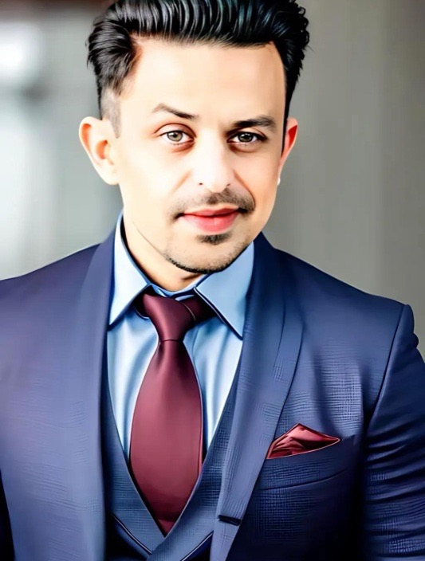
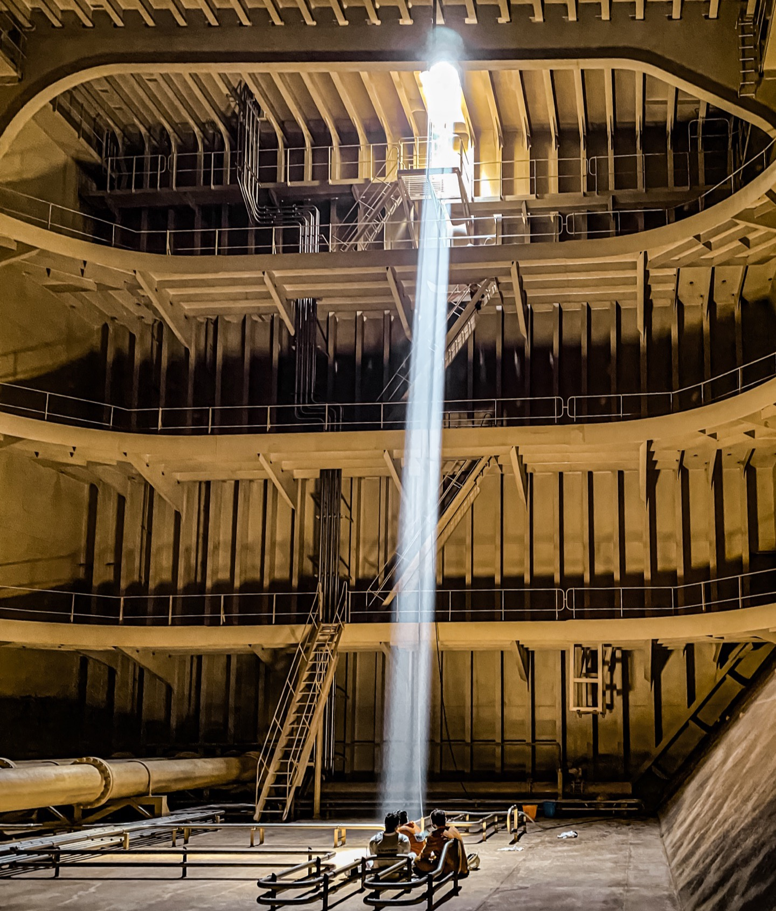
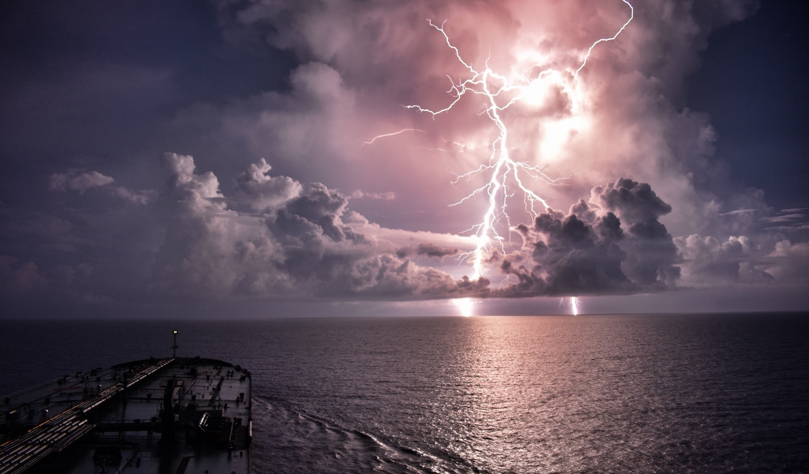
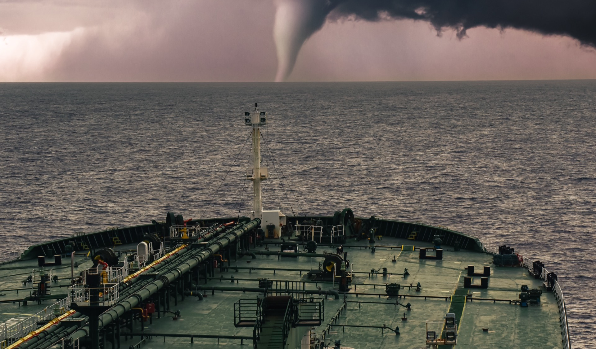
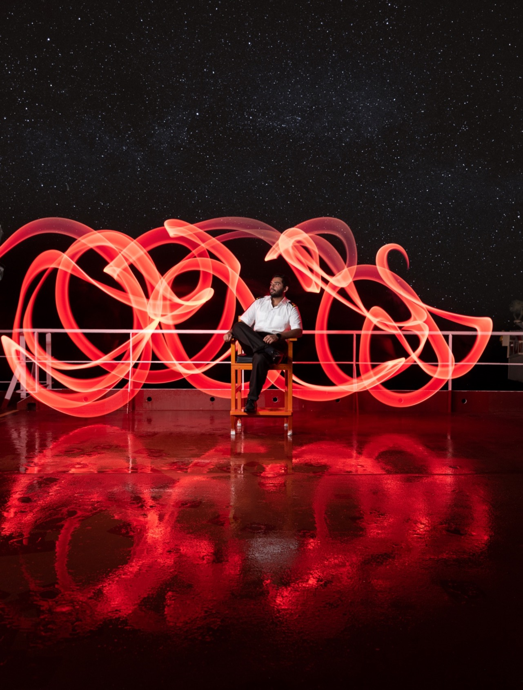
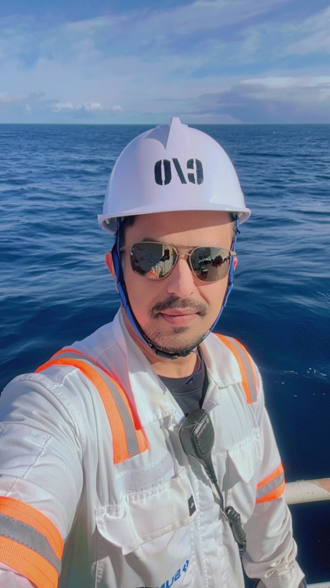

Angad Sharma
20 years of deep-sea command oversight across international trading routes. Experienced in Very Large Crude Carrier navigation, hazardous cargo transfers, oil major vetting inspections, and safety governance—paired with venture building in maritime compliance and award-winning maritime photography.

Command at Sea & Systems on Shore
Decades spent navigating extreme oceanic environments instill a profound discipline: absolute respect for preparation, zero tolerance for complacency, and clarity under high-stakes conditions.
Navigating High-Stakes Ocean Transits
For 20 years, I have navigated the globe aboard Very Large Crude Carriers (VLCCs)—vessels measuring over 330 meters carrying hundreds of thousands of tons of cargo. As Chief Officer, my duties encompass cargo transfer sequencing, crude oil washing (COW), ballast water exchange, and upholding SIRE/OCIMF oil major vetting standards with an unblemished record.
Bridging Maritime Regulation & Modern Software
Experiencing persistent compliance friction across shipping operations motivated me to architect technological solutions. I founded VaultCrew to construct India’s first digital compliance engine tailored for RPSL manning agencies, automating the complex validation workflows governed by DG Shipping and the STCW convention.
Authentic Documentation of the Elements
Serving on the open ocean presents atmospheric phenomena and moments of raw beauty few ever witness. My photography captures the immense scale of maritime commerce, fierce electric storms, and quiet moments of human devotion aboard steel vessels thousands of miles from land.
Award-Recognized Maritime Photography
Authentic, unvarnished records of the ocean elements and shipboard life. Captured from the bridge wing and cargo deck across 20 years in international service.

Beam of Sunrays
INTERTANKO Annual Tanker Event 2023 • Sponsored by Valles SteamshipCaptured deep within the cargo hold of an oil tanker. A singular, piercing shaft of sunlight breaks through the hatch opening, illuminating two crew members engaged in inspection. 1st Place Overall Win.
Sunrise
INTERTANKO Annual Tanker Event 2023 • Chief Officer aboard MT AtherinaTaken during deep-sea passage while serving as Chief Officer aboard MT Atherina with Suntech Ship Management. Captures dawn cresting the open oceanic horizon along the vessel's starboard bow.



20 Years of Operational Command
Proven leadership on world-class tanker fleets. Zero-incident record across complex cargo operations, dry-docking overhauls, and strict oil major vetting regimes.
- Vessels: Commanded VLCCs & Chemical Carriers up to 319,471 GRT.
- Safety Governance: Flawless execution of high-risk cargo transfers.
- Compliance: Maintained impeccable SIRE, CDI, and PSC inspection records.
- Global Logistics: 20 years navigating major international deep-sea corridors.

Wallem Group
Nearly twelve years progressing through Officer of the Watch to Chief Officer across tanker and Pure Car Carrier (PCC) vessels. Built foundational mastery in international passage planning, bridge watchkeeping, and port state control compliance.
Suntech Ship Management
Six years as Chief Officer across seven vessels, including crude tankers and chemical carriers. Commanded MT Atherina (319,471 GRT). Maintained zero safety incidents while leading successful SIRE, CDI, and drydock overhauls.
Synergy Marine Group
Chief Officer aboard NAVE UNIVERSE (VLCC crude oil tanker). Direct command of cargo transfers, crude oil washing (COW), inert gas systems, and SIRE/OCIMF oil major vetting across worldwide routes.
Chief Officer — Very Large Crude Carriers
Full operational command over cargo handling, crude oil washing (COW), inert gas systems, and stability calculations on VLCC tonnage operating in worldwide trade routes.
- Direct accountability for SIRE/OCIMF oil major vetting audits, PSC inspections, and strict ISGOTT compliance.
- Conducted passage planning, high-risk transit safety drills, and emergency team leadership across multinational deck complements.
- Supervised ballast water treatment systems (BWTS) and environmental compliance across international waters.
Chief Officer — MT Atherina
Headed vessel deck operations aboard MT Atherina, maintaining an unblemished record with zero navigational, occupational, or environmental incidents.
- Managed shipyard dry-docking repairs, hull coating applications, cargo valve overhauls, and special survey renewals on time and budget.
- Directed safe port turnarounds across major international petroleum discharge and loading hubs.
- Captured the award-winning photograph "Sunrise" while navigating aboard MT Atherina (INTERTANKO 2nd Place).
Second Officer & Third Officer
Primary bridge watchkeeper responsible for navigational safety, electronic chart display and information systems (ECDIS), and life-saving equipment readiness.
- Constructed detailed global passage plans conforming to SOLAS, MARPOL, and company standing orders.
- Conducted rigorous weekly inspections and maintenance of all lifeboats, fire detection gear, and emergency appliances.
VaultCrew: India's Crew Compliance Engine
Conceived directly from hands-on observation of persistent operational bottlenecks in seafarer crew management. VaultCrew replaced chaotic spreadsheets and manual documentation checks with a centralized compliance architecture specifically engineered for Recruitment and Placement Service (RPSL) agencies in India.
Automated Verification
Algorithmic validation of Certificates of Competency (CoCs), STCW endorsements, and medical clearances to eliminate documentation lapses before crew sign-on.
RPSL Governance Engine
Structured strictly around Directorate General of Shipping rules, guaranteeing continuous audit-readiness and streamlined reporting.
Fleet Roster Analytics
Centralized intelligence dashboard providing manning superintendents with instant clarity on sea service histories, relief schedules, and credential expiry.
Qualifications & Marine Education
Certified maritime competency under statutory maritime administrations, rigorous nautical science academics, and pre-sea academy training.
Certificate of Competency
First Mate (Foreign Going)
Full international statutory certification authorizing senior operational command and navigational oversight on all tonnage worldwide under the STCW convention.
B.Sc. Nautical Science
Comprehensive academic curriculum encompassing terrestrial and celestial navigation, marine meteorology, naval architecture, shipboard cargo systems, and international maritime law.
Pre-Sea Marine Training
Rigorous foundational residential academy discipline, bridge watchkeeping simulators, survival craft command, advanced firefighting, and basic medical first aid training.
Initiate a Conversation
Available for discussions concerning VLCC operational management, maritime safety advisory, technology innovation, and fine art print licensing for maritime photography.